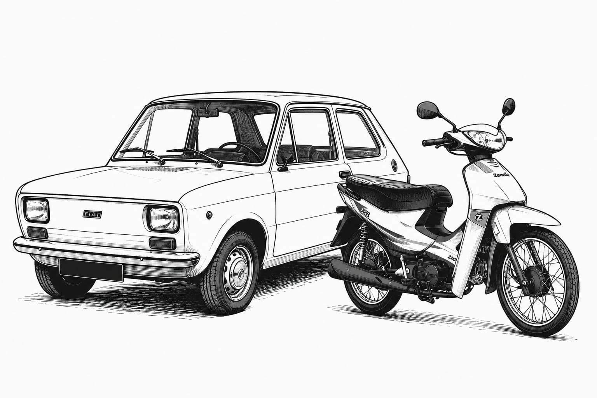

Motorlines
Inicio
Historias
Noticias
Merch
El Fiat que cambió todo: la primera aventura automovilística de Javi
ML- “Tenía apenas 17 años, no tenía mucha experiencia, pero sí algo claro: quería tener su propio auto.”
25 mayo 2026 | 20:00 pm
